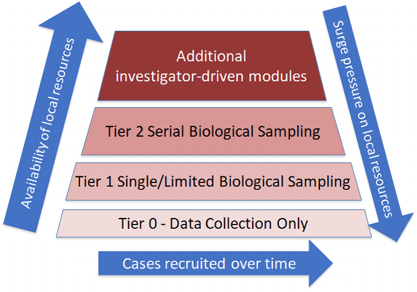

Overview
What is the CCP?
The ISARIC-WHO Clinical Characterisation Protocol (CCP) is a flexible protocol designed to inform the major questions of acute illness from an emerging pathogen or exposure: transmission, natural history (pathogen and host), mechanisms of severity and how to influence them.
The CCP is designed for collecting data and biological samples rapidly in a globally-harmonised manner following a tiered approach.
Core Principles
Investigators retain control and decision-making over the data and samples they collect and share.
The CCP is the product of a broad global consensus, approved by the WHO global ethics committee.
Establishing approved procedures in advance should always take priority.
The protocol can be adapted to requirements and resources as needed.
International harmonisation facilitates important collaborative analyses across borders.
Prior Uses
The CCP has been in use around the world since the first version was released in 2014. It was used for the first clinical characterisation of novel coronavirus in Wuhan in 2020. In collaboration with its sister study GenOMICC, the CCP was used to discover a genetic variant (in TYK2) that led directly to a new, effective treatment for Covid-19, baricitinib. It has been used to support studies of H5N1 influenza, MERS, Ebola, Zika, tick-borne encephalitis virus (TBEV), Mpox, and many other outbreaks around the world.
Primary Objectives
Characterise clinical features and pathophysiology
- Describe clinical features of the illness
- Explain disease pathogenesis and identify therapeutic approaches
- Understand risk factors for exposure, severe illness and death
- Describe patient trajectories to inform healthcare planning
- Describe response to treatment
Characterise the causative agent
- Describe characteristics of causative agents
- Observe pathogen replication and evolution within the host
- Characterise host responses to infection and therapy
- Identify host genetic variants associated with disease progression
Integration with ISARIC Tools
To strengthen partnerships, harmonisation and accelerate response, ISARIC enhanced the standardisation and flexibility of its tools. As a result, ISARIC developed ARC, BRIDGE, and VERTEX to operationalise the Clinical Characterisation Protocol (CCP).
Question bank for CRF generation
Software tool for CRF generation
Data analysis and visualisation platform
Toolkits and guidance are available for any research team to set up a study with the Clinical Characterisation Protocol (CCP) and data tools for Dengue, Mpox, H5N1 and COVID-19. For more information, visit the CCP Toolkit.
Setup & Configuration
Tiered Recruitment Approach
The CCP uses a tiered approach to allow for resource-appropriate implementation. Settings vary in terms of clinical infrastructure, resources and capacity.

Availability of local resources over time
Data Collection Only
Routine clinical and laboratory data may be collected. No biological samples obtained for research purposes. Minimum essential clinical data set summarising illness episode and outcome.
Simple & Stable Samples
Individual informed consent required. Simple, stable samples that do not require laboratory processing at the recruiting site will be obtained. Includes host DNA/RNA, dried blood spots, and cell samples in preservative.
Local Laboratory Required
Individual informed consent required. Samples requiring laboratory processing at the recruiting site will be obtained. Includes blood plasma and serum, and pathogen samples obtained specifically for research.
Specialist Laboratory Required
Individual informed consent required. Samples requiring specialist laboratory facilities at the recruiting site will be obtained. Includes specialist research immunology assays and pharmacokinetics studies.
Implementing the CCP
The CCP enables a structured approach to studying emerging health threats. To start implementing the CCP:
Read the latest version of the ISARIC Global Clinical Characterisation Protocol
Oversee the study and ensure protocol adherence
Ensure the study aligns with the health facility's response strategy
Obtain ethical approval and necessary funding
Inform ISARIC if the protocol is used
Inclusion Criteria
This study will enrol eligible patients who meet the criteria below:
- CONFIRMED INFECTION - Confirmed infection with an emerging or high-consequence pathogen
- SUSPECTED INFECTION - Suspected infection with an emerging or high-consequence pathogen
- CONFIRMED EXPOSURE - Confirmed exposure to a pathogen, toxin, chemical or other exposure of public health interest
- SUSPECTED EXPOSURE - Suspected exposure to a pathogen, toxin, chemical or other exposure of public health interest
The protocol has no end date and can be activated upon presentation of an eligible participant or the occurrence of an event of public health interest.
How to
Use Case Report Forms (CRFs)
CRFs are standardized documents used to systematically collect data from clinical trials and observational studies. CRFs ensure the accurate capture of key information required for protocol adherence.
ISARIC has approved a variety of Clinical Report Forms (CRFs) for different diseases, studies, and scoring systems. This guide demonstrates how to effectively use the ISARIC-approved CRFs. For detailed instructions on customizing your CRF, see the Getting Started with BRIDGE tutorial.
Direct Links to Generate CRFs
Direct links take you directly to the BRIDGE web application with the relevant template selected. All you need to do is click the "Generate" button.
Video: Generating a CRF from a direct link
Using Templates
Templates are pre-selected groups of questions. Users can click on the Templates tab in BRIDGE and select those they want to include in the CRF.
ISARIC templates allow users to start the CRF creation process based on a set of pre-selected questions that ISARIC has curated for a particular disease or score.
- Disease templates - Generated by the ISARIC network, ensuring questions are adequate and sufficient to answer pertinent research questions
- Score templates - Subsets of questions necessary to compute commonly used clinical scores (e.g., Charlson Comorbidity Index, SOFA)
If multiple templates are selected, the obtained CRF is the union of the questions from all the selected templates.
For more information about the ISARIC CRF creation process or to request specific templates, please write to data@isaric.org.